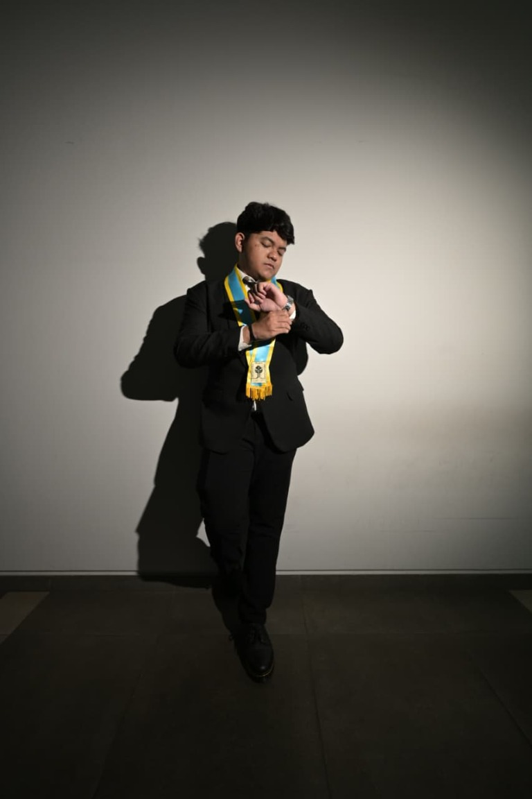
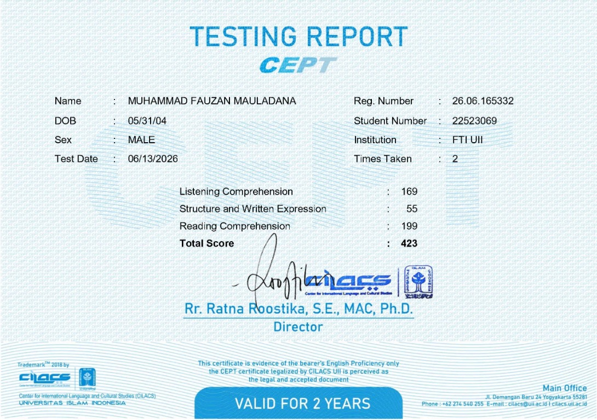
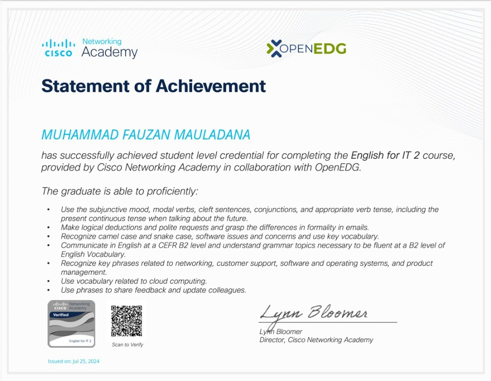
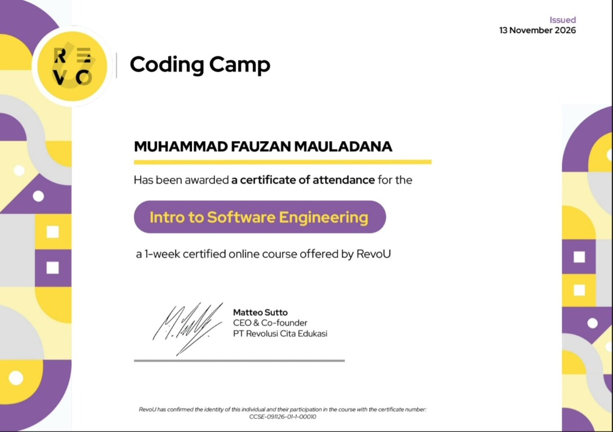
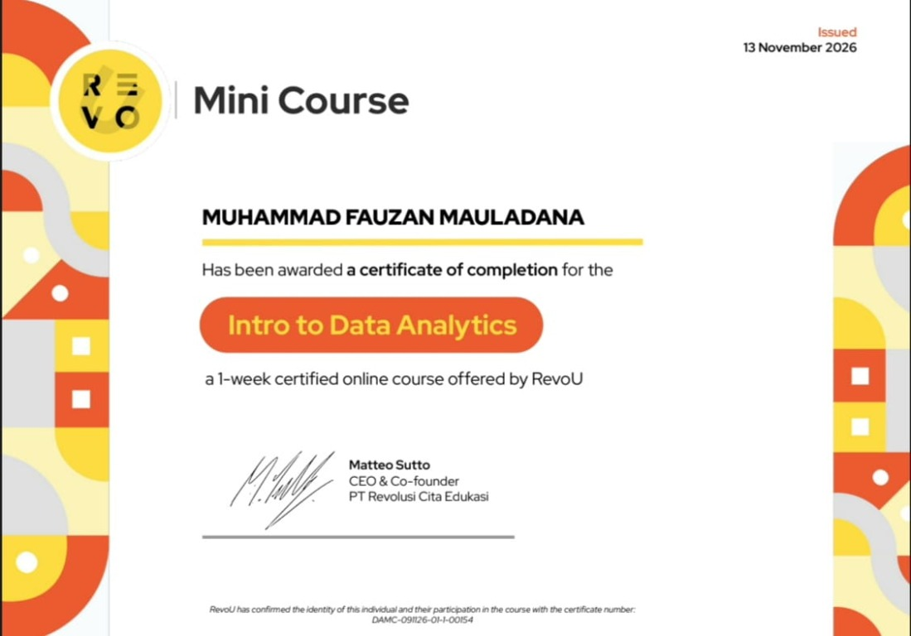

Perkenalkan, Saya
Muhammad Fauzan
Mauladana
Informatics Graduate Frontend Developer
Saya lulusan Informatika yang memiliki ketertarikan dalam frontend developer, web development, game development, IT support, dan UI/UX. Saya senang mengeksplorasi teknologi baru dan membangun solusi digital yang bermanfaat.

ABOUT ME
Halo, saya Fauzan, lulusan S1 Informatika dari Universitas Islam Indonesia (UII) tahun 2026 dengan IPK 3,41.
Saya juga memiliki pengalaman sebagai Asisten Dosen PJJ di ITC Centrum, dengan tanggung jawab memberikan pelatihan e-learning kepada dosen serta membantu pengelolaan pembelajaran digital.
Saya memiliki ketertarikan di bidang teknologi, khususnya frontend developer, web development, game development, dan UI/UX. Selama masa perkuliahan, saya telah mengerjakan berbagai proyek, mulai dari pengembangan website, prototipe aplikasi, hingga game 2D dan 3D.
BIDANG KETERTARIKAN
PERSONAL HIGHLIGHTS
TECHNICAL SKILLS
TOOLS
DESIGN TOOLS
EXPERIENCE
ITC Centrum - Asisten Dosen PJJ- Membantu pelaksanaan pelatihan e-learning kepada dosen.
- Memberikan pendampingan penggunaan platform pembelajaran digital.
- Membantu pengelolaan dan operasional kegiatan pembelajaran daring.
PROJECTS
CERTIFICATE

CEPT CILACS UII

ENGLISH FOR IT 2 CISCO NETWORKING ACADEMY

SOFTWARE ENGINEERING REVOU

DATA ANALYTICS REVOU
LET'S GET IN TOUCH!
Saya terbuka untuk peluang kerja, kolaborasi, maupun kesempatan baru di bidang teknologi. Jangan ragu untuk menghubungi saya melalui kontak berikut.